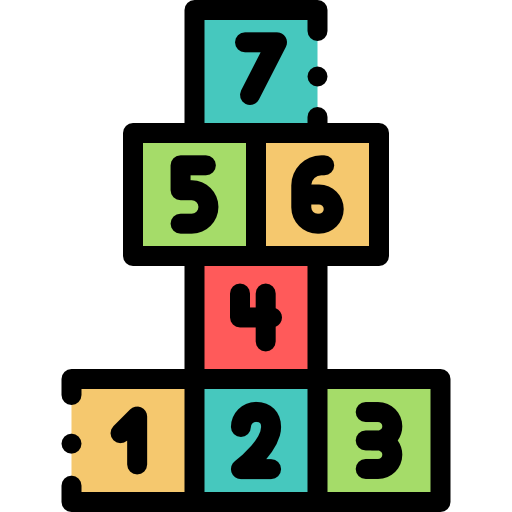

<ion-header>
  <ion-toolbar color="primary">
    <ion-title>Tabla de idiomas</ion-title>
  </ion-toolbar>
</ion-header>
<ion-content [fullscreen]="true">

  <ion-fab horizontal="end" vertical="top" slot="fixed">
    <ion-fab-button color="warning">
      
    </ion-fab-button>
    <ion-fab-list side="bottom">
      <ion-fab-button>
        
      </ion-fab-button>
      <ion-fab-button>
        
      </ion-fab-button>
      <ion-fab-button>
        
      </ion-fab-button>
    </ion-fab-list>
  </ion-fab>

  <ion-fab horizontal="end" vertical="bottom" slot="fixed">
    <ion-fab-button color="warning">
      
    </ion-fab-button>
    <ion-fab-list side="top">
      <ion-fab-button color="light" (click)="CambiarTema('colores')">
        
      </ion-fab-button>
      <ion-fab-button color="light" (click)="CambiarTema('numeros')">
        
      </ion-fab-button>
      <ion-fab-button color="light" (click)="CambiarTema('animales')">
        
      </ion-fab-button>
    </ion-fab-list>
  </ion-fab>


  <ion-fab horizontal="top" vertical="bottom" slot="fixed">
    <ion-fab-button color="danger" (click)='cerrarSesion()'>
      <ion-icon name="log-in-outline"></ion-icon>
    </ion-fab-button>

  </ion-fab>

  <div *ngIf='idioma== "espanol" '>
    <app-espanol [tema]='tema'></app-espanol>
  </div>

  <div *ngIf='idioma== "ingles" '>
    <app-ingles [tema]='tema'></app-ingles>
  </div>

  <div *ngIf='idioma== "portugues" '>
    <app-portugues [tema]='tema'></app-portugues>
  </div>

</ion-content>
 